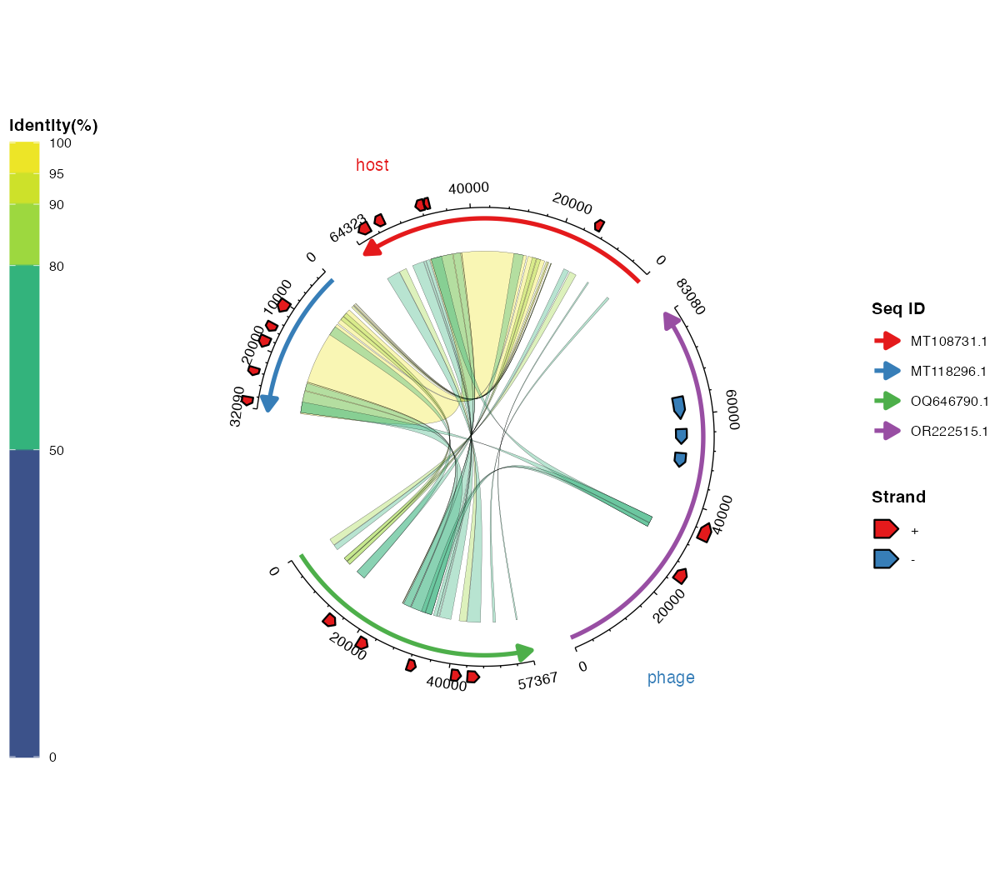
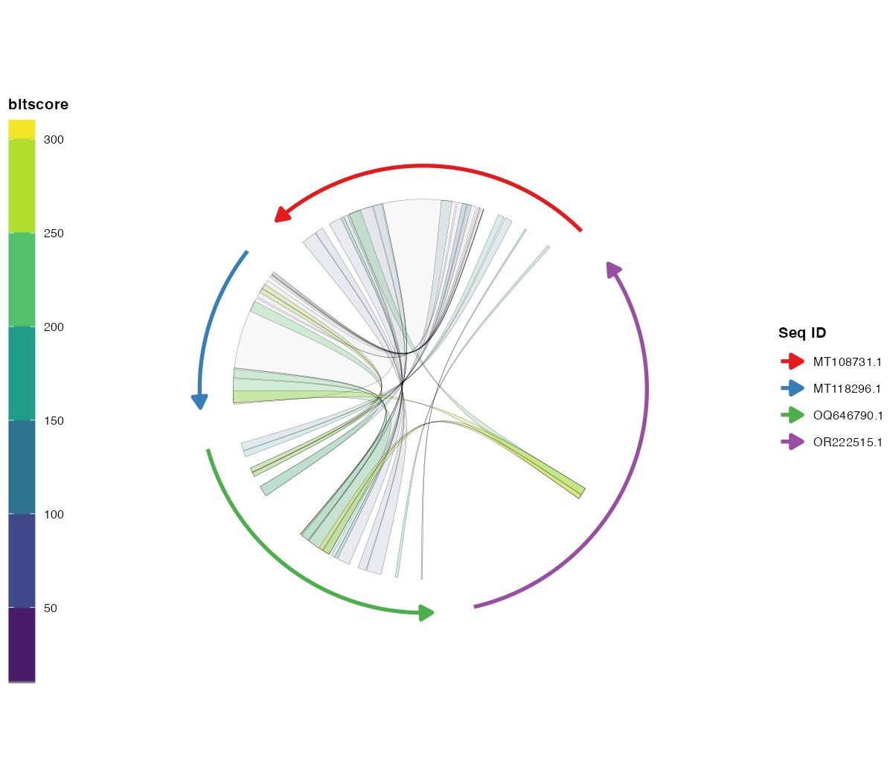
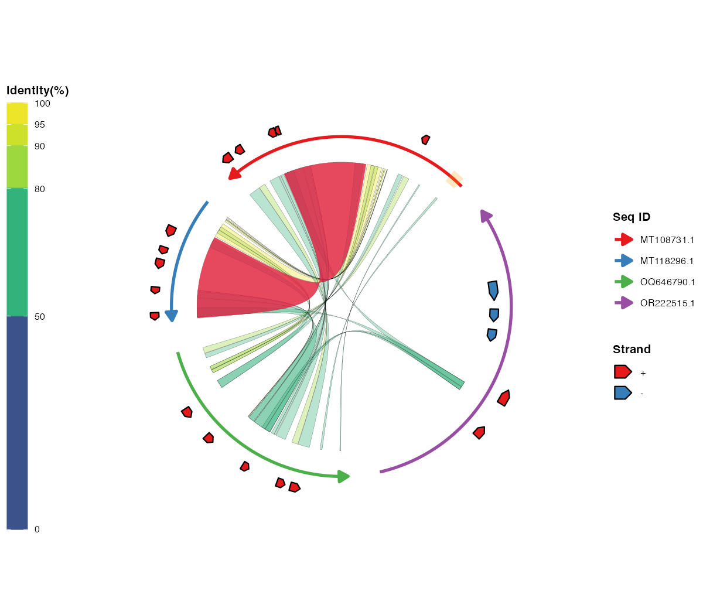
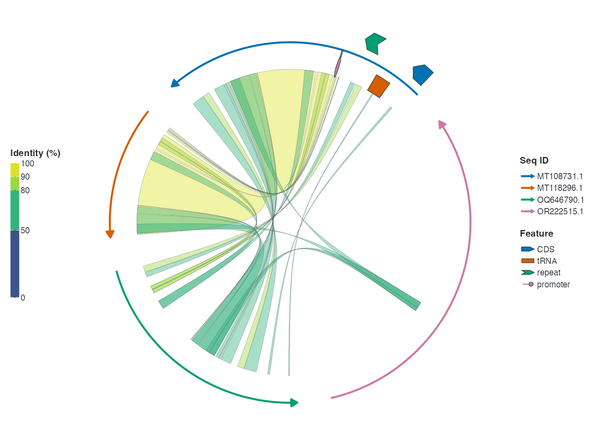

library(ggchord)
library(ggplot2)
data(seq_data_example)
data(ribbon_data_example)
data(gene_data_example)本教程完整介绍 ggchord 的工作流程：准备输入数据、在 R
中导入文件、 校验与清理数据，以及逐层构建图形。
1. 前期数据准备
包需要三类输入数据，均为普通数据框。
【必须】序列信息数据（seq_data）
| 列名 | 类型 | 说明 |
|---|---|---|
seq_id |
字符 | 序列唯一标识 |
length |
整数 | 序列长度（必须为正数） |
示例：
| seq_id | length |
|---|---|
| MT108731.1 | 64323 |
| MT118296.1 | 32090 |
| OQ646790.1 | 57367 |
| OR222515.1 | 83080 |
从 FASTA 文件生成该表格的常见方法：
【可选】比对数据（ribbon_data）
每行表示两条序列之间的一个比对片段（列名遵循常见比对工具的输出约定）：
| 列名 | 类型 | 说明 |
|---|---|---|
qaccver |
字符 | 查询序列 ID |
saccver |
字符 | 目标序列 ID |
length |
整数 | 比对长度（bp） |
pident |
数值 | 相似度百分比（0–100） |
qstart |
整数 | 查询序列上的起始位置 |
qend |
整数 | 查询序列上的终止位置 |
sstart |
整数 | 目标序列上的起始位置 |
send |
整数 | 目标序列上的终止位置 |
示例行：
| qaccver | saccver | length | pident | qstart | qend | sstart | send |
|---|---|---|---|---|---|---|---|
| MT108731.1 | MT118296.1 | 24856 | 98.612 | 26298 | 51139 | 7121 | 31959 |
| MT108731.1 | MT118296.1 | 4412 | 97.031 | 21513 | 25922 | 2365 | 6772 |
| MT108731.1 | MT118296.1 | 464 | 94.181 | 20691 | 21146 | 1032 | 1495 |
例如，BLAST 的 -outfmt 7
标准输出可以直接解析为该表格：
seqs=("MT108731.1" "MT118296.1" "OQ646790.1" "OR222515.1")
ext="fna"
for ((i=0; i<${#seqs[@]}-1; i++)); do
for ((j=i+1; j<${#seqs[@]}; j++)); do
blastn \
-outfmt '7 qaccver saccver pident length mismatch gapopen qstart qend sstart send evalue bitscore qcovs qlen slen sstrand stitle' \
-query "examples/fasta/${seqs[$i]}.${ext}" \
-subject "examples/fasta/${seqs[$j]}.${ext}" \
-out "examples/blastn/${seqs[$i]}__${seqs[$j]}.o7"
done
done【可选】基因数据（gene_data）
每行表示一条序列上的一个基因（或其他特征）：
| 列名 | 类型 | 说明 |
|---|---|---|
seq_id |
字符 | 基因所属序列 ID |
start |
整数 | 基因起始位置 |
end |
整数 | 基因终止位置 |
strand |
字符 | 链方向（+ 或 -） |
anno |
字符 | 基因注释 / 功能类别 |
示例行：
| seq_id | start | end | strand | anno |
|---|---|---|---|---|
| MT108731.1 | 60709 | 63087 | + | hypothetical protein |
| MT118296.1 | 14628 | 16301 | + | virion structural protein |
| OQ646790.1 | 43765 | 46140 | + | integrase |
| OQ646790.1 | 13194 | 15551 | + | tail tape measure protein |
例如，可由 GFF3 文件转换得到：
library(tidyverse)
gff3FilesPath <- list.files(path = "examples/gff3", pattern = "\\.gff3$", full.names = TRUE)
gff3Table <- map_df(gff3FilesPath, ~read_tsv(.x, show_col_types = F, comment = "#",
col_names = F) %>% set_names(c("seq_id", "source", "type", "start", "end",
"score", "strand", "phase", "attributes")))
geneTrackTable <- gff3Table %>%
filter(type == "CDS") %>%
mutate(anno = str_extract(attributes, "(?<=product=)[^;]+(?=;)")) %>%
select(seq_id, start, end, strand, anno)
write_tsv(geneTrackTable, "examples/gene_track.tsv")2. 在 R 中导入 FASTA / BLAST / GFF3 数据
外部命令行工具（BLAST、seqkit 等）通常用于准备数据，但它们产出的文件 也可以直接用包内置的导入助手在 R 中读取，从而把「在 R 外准备数据」与 「在 R 中导入并绘图」两个步骤清晰分开：
library(ggchord)
# FASTA -> seq_data（读取并合并全部示例 FASTA 文件）
seq_data <- invisible(read_fasta_lengths(files = "examples/fasta/*.fna"))
# BLAST -outfmt 6/7 表格输出 -> ribbon_data（12 或 17 列自动识别）
ribbon_data <- invisible(read_blast(files = "examples/blastn/*.o7"))
# GFF3 -> gene_data（默认取 CDS；anno 从 product/Name/... 属性提取）
gene_data <- invisible(read_gff3(files = "examples/gff3/*.gff3"))
ggchord(seq_data, ribbon_data, gene_data) +
geom_seq() + geom_ribbon() + geom_gene()read_blast()
保留有用的额外列（evalue、bitscore、qcovs、qlen、
slen、sstrand、stitle）；read_gff3()
保留 type、source、
score、phase、attributes；read_fasta_lengths()
可通过 header_delim = "|" 拆分 NCBI 风格标题。
3. 使用教程：从数据到弦图
本节把准备好的数据逐步变成完整弦图。每一步都给出简短示例与对应图片。
3.1 校验并清理数据
data(seq_data_example)
data(ribbon_data_example)
data(gene_data_example)
validate_ggchord_data(seq_data_example, ribbon_data_example, gene_data_example)
clean_ggchord_data(seq_data_example, ribbon_data_example, gene_data_example,
unknown_id = "drop", out_of_range = "clip",
reversed_interval = "sort", invalid_pident = "clip")ggchord()
默认也会执行校验（validate = "warn"）。用
"error" 可在严重问题时停止，用 "none"
可跳过诊断以处理大数据。
3.2 筛选并合并 Ribbon
kept <- filter_ggchord_ribbons(ribbon_data_example, min_pident = 90,
drop_self_links = TRUE,
sort_by = "pident")
dedup <- deduplicate_ggchord_ribbons(kept$data, by = "exact",
keep = "best_pident")
merged <- merge_ggchord_ribbons(dedup$data, max_gap = 0)返回的 $data 可直接传入 ggchord()。


3.5 加入基因与标签
ggchord(seq_data_example, gene_data = gene_data_example) +
geom_seq() + geom_gene() + geom_gene_label_repel()
带防重叠标签的基因箭头。

3.7 对序列分组
seq_grouped <- transform(seq_data_example,
seq_group = c("host", "host", "phage", "phage"))
ggchord(seq_grouped, ribbon_data_example, gene_data_example) +
geom_seq(seq_group = "seq_group",
seq_group_colors = c(host = "#E41A1C", phage = "#377EB8")) +
geom_ribbon() + geom_gene()
带组间空隙和组标签的分组序列。
3.8 映射数值列与 Ribbon 方向
rb_scored <- transform(ribbon_data_example,
bitscore = seq_len(nrow(ribbon_data_example)) * 10)
ggchord(seq_data_example, rb_scored) +
geom_seq() +
geom_ribbon(ribbon_color_by = "bitscore",
ribbon_alpha_by = "bitscore",
ribbon_direction = "linetype")
连续填充、透明度与方向映射。
3.9 高亮区间与连接带
regions <- data.frame(seq_id = "MT108731.1",
start = 1000, end = 4000, color = "orange")
ggchord(seq_data_example, ribbon_data_example) +
geom_seq() + geom_ribbon() +
geom_seq_region(regions = regions) +
geom_ribbon_highlight(ribbon_ids = 1)
序列区间与连接带高亮。
3.10 绘制通用 feature
features <- data.frame(seq_id = c("MT108731.1", "MT118296.1"),
start = c(1000, 500), end = c(4000, 2000),
strand = c("+", "-"), type = c("CDS", "tRNA"))
ggchord(seq_data_example, ribbon_data_example) +
geom_seq() + geom_ribbon() + geom_feature(features)
用 geom_feature() 绘制的通用 feature。
3.11 应用主题与 scale
ggchord(seq_data_example, ribbon_data_example, gene_data_example) +
geom_seq() + geom_ribbon() + geom_gene() + geom_axis() +
scale_color_manual(values = c("MT108731.1" = "#E41A1C",
"MT118296.1" = "#377EB8",
"OQ646790.1" = "#4DAF4A",
"OR222515.1" = "#984EA3")) +
theme(panel.background = element_rect(fill = "grey95"),
legend.position = "bottom", legend.box = "horizontal")
统一图例的主题化图形。
3.12 发表级精细控制
ggchord(seq_data_example, ribbon_data_example, gene_data_example,
title = "ggchord") +
geom_seq(seq_radius = c(3.3, 2.5, 1.8, 1.25),
seq_orientation = c(-1, -1, 1, -1),
seq_colors = c("MT108731.1" = "#E76F51",
"MT118296.1" = "#264653",
"OQ646790.1" = "#2A9D8F",
"OR222515.1" = "#D9A62E")) +
geom_ribbon(ribbon_alpha = 0.45) +
geom_gene() +
geom_gene_label_repel(gene_label_size = 2, seed = 42) +
geom_seq_label() +
geom_axis() +
theme(plot.background = element_rect(fill = "#FBF9F6", colour = NA),
panel.background = element_rect(fill = "#FBF9F6", colour = NA))
精细控制下的完整弦图。
6. 灵活的参数格式
序列级参数（seq_radius、seq_gap、axis_label_size
等）支持单值、无名向量、按序列 ID
命名的向量/列表、按序列顺序命名的列表（"1"、"2"…）或无名列表。基因级参数（gene_label_rotation、gene_offset
等）还额外支持按链方向（+/-）指定。以下写法均合法：
# 1. 全部使用同一个值
gene_label_rotation = 20
# 2. 每条序列按链方向分别指定
gene_label_rotation = c("+" = -15, "-" = -45)
# 3. 按序列 ID 名称指定
gene_label_rotation = list(
"MT118296.1" = c("+" = -15, "-" = -45),
"OR222515.1" = c("+" = 30, "-" = -30),
"MT108731.1" = c("+" = 15, "-" = -15),
"OQ646790.1" = c("+" = 0, "-" = 0)
)
# 4. 按序列顺序指定（"1" 表示第一条序列）
gene_label_rotation = list(
"1" = c("+" = -15, "-" = -45),
"2" = c("+" = 30, "-" = -30),
"3" = c("+" = 15, "-" = -15),
"4" = c("+" = 0, "-" = 0)
)
# 5. 无名列表：按序列顺序（与 #4 等价）
gene_label_rotation = list(
c("+" = -15, "-" = -45),
c("+" = 30, "-" = -30),
c("+" = 15, "-" = -15),
c("+" = 0, "-" = 0)
)
# 6. 长度为一的列表会循环应用到每条序列
gene_label_rotation = list(20)7. 图层参考
| 图层 | 函数 | 说明 |
|---|---|---|
| 序列弧线 | geom_seq() |
为每条序列绘制弧线（或直线），含方向箭头 |
| 比对连接带 | geom_ribbon() |
根据比对结果绘制彩色连接带 |
| 基因箭头 | geom_gene() |
绘制基因/特征箭头多边形 |
| 基因标签 | geom_gene_label() |
在固定位置绘制基因标签 |
| 防重叠基因标签 | geom_gene_label_repel() |
类 ggrepel 标签：带引导线、支持换行与重叠隐藏 |
| 坐标轴 | geom_axis() |
绘制坐标轴线、主/次刻度与刻度标签 |
| 序列标签 | geom_seq_label() |
在弧线内侧/外侧放置序列名称 |
8. 图形解读
- 序列弧线——每条彩色弧线代表一条序列，长度按比例映射，箭头表示方向。
- 连接带——连接序列之间的彩色区域代表比对/同源区间；默认颜色编码相似度、查询或目标序列。
- 基因箭头——绘制在序列上的箭头多边形；颜色编码链方向或功能类别，可选标签。
- 坐标轴——每条弧线外侧的刻度与数字标注序列位置。